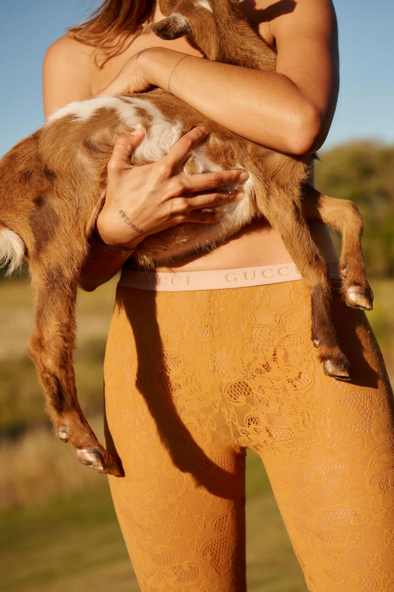
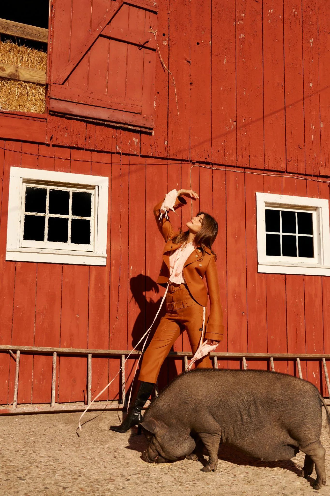

Styling — Editorial — Upstate New York
Editorial Rural
× Gucci
Upstate New York
Producción independiente
Un chancho, una cabra y piezas de Gucci. Nadie esperaba eso de una producción argentina. Eso era exactamente el punto.

La propuesta conceptual era simple: tomar piezas de temporada de Gucci y ubicarlas en el contexto más alejado posible de una semana de la moda. Una granja en Upstate New York, animales reales, tierra, madera roja.
La tensión entre ambos mundos es la imagen. No hay manera de hacer eso sin comprometerse con la incomodidad de esa contradicción.

La imagen del close-up del rostro de la modelo con la cabra recién nacida se convirtió en la más circulada de la producción. No porque fuera la más obvia, sino porque era la menos esperada.
Mezclar Gucci con un chivito tiene sus propias reglas de composición. La primera: nunca intentar controlarlo.
Créditos